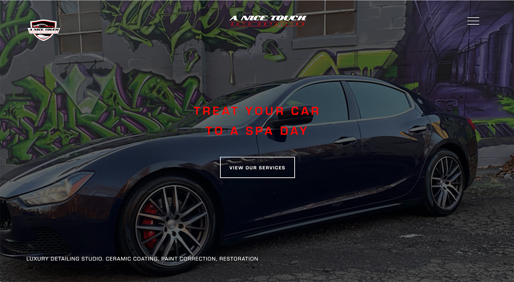
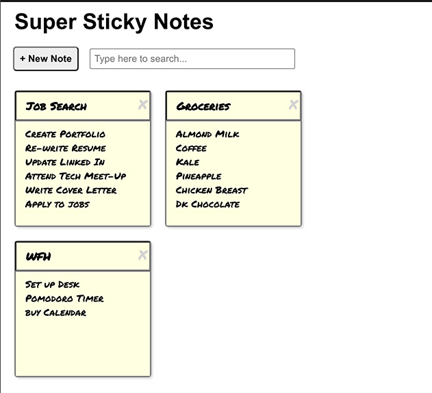
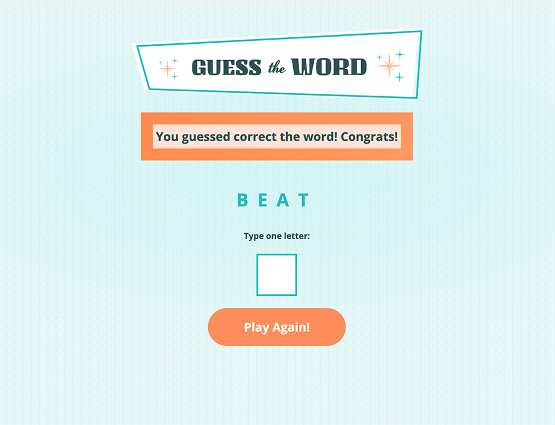
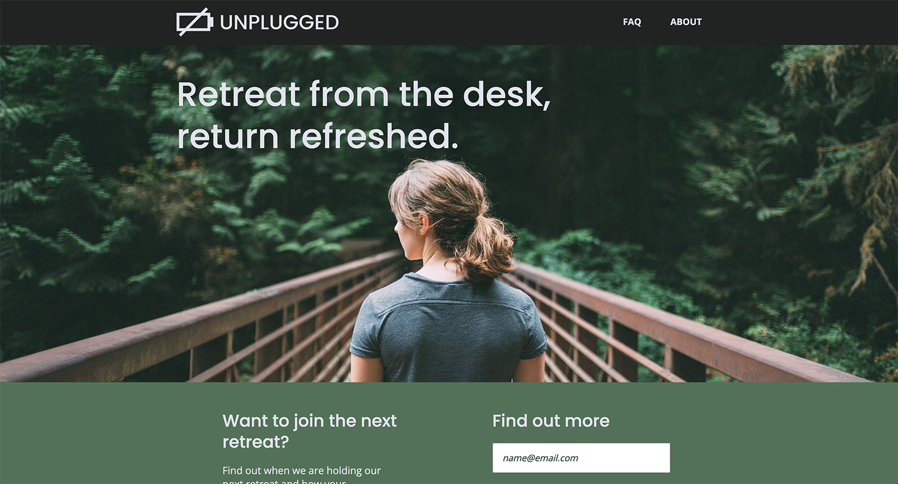

Projects

A Nice Touch Auto Detail
A multipage website for an auto-detailing business that uses mobile responsive design. The site features slideshow overlays, an animated hamburger menu, a GiftUp gift card integration and responsive elements to showcase Anthony's work in a way that appeals to his target customer.
Skills:HTML, CSS, FlexBox, JavaScript.
Tools:Photoshop, Chrome DevTools, GitHub Pages
Live Page

Super Sticky Notes
Greenfield project creating an interactive web app that allows users create “sticky notes” to create, save and delete to-do items. The UI is built with multiple components giving it the functionality to store data in the browser for the user to adjust in the future and a search function to use keywords to search and filter notes.
Skills:React, JSX, Components, HTML, CSS
Tools:CodeSandbox, GitHub Pages, Props, State
Live Page

Guess the Word Game
Guess the Word is an interactive game where players guess a word by entering one letter at a time. If all letters are guessed correctly before the allotted guesses are exceeded, they win! There's a button that allows the player to play again.
Skills:JavaScript
Tools:CodeSandbox, GitHub Pages, APIs, JSON
Live Page

Unplugged Retreat
Unplugged Retreat is a multi-page website for a tech company retreat that uses mobile responsive design built from a provided Photoshop design comp. The site features a Google Map integration and responsive elements to create a site that is user-friendly on all devices, clean and informative.
Skills:HTML, CSS, Flexbox, Media Queries, Responsive Typography
Tools:Photoshop, Text Editors, Chrome DevTools, GitHub Pages
Live Page

Rogue Pickings
A simple responsive homepage design for a boutique pop-up restaurant or food truck. Originally built as a static site from a provided design comp, I converted the site into a responsive design using Flexbox.
Skills:HTML, CSS, Flexbox, Media Queries, Responsive Typography
Tools:Photoshop, Text Editors, Chrome DevTools, GitHub Pages
Live Page